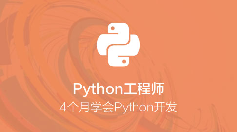
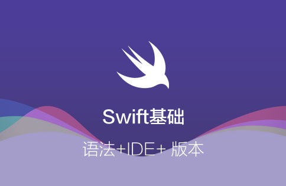

就业学习
系统实战 可保就业
::before"适用于"大3 / 大4等即将毕业的学生
转行到IT的从业者们
已经入行但工作吃力的新人们


- 
基础学习
动手务实 基础学习
::before"适用于"
大1/大2/大3等非毕业班学生
以后准备转行到IT的人
对IT有兴趣的非IT从业者


- 


我是技术大咖
专注技术 乐于分享


我是纯小白
每个人都从小白开始

- 新手指南

(详细的学习指南)
- 人工咨询
(免费咨询)
- 400-678-8266

免费电话咨询


让每个人
都能享受高质量的职业教育
- 院校

为学生进入职场早日准备
- 企业
给员工提供可持续技能提升
- 培训机构
为了让学员更好的学习